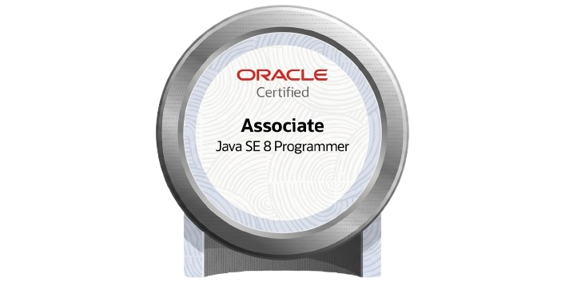

My Portfolio
Hi, my name is #
Bryan Gonzalez #
Software engineer focused on designing and implementing interactive, state and event driven systems, modular architectures, and reusable game frameworks. Experienced in building complex systems from scratch as well as extending and safely evolving existing architectures under real production constraints.
My work has primarily focused on real-time interactive systems in game development, where I’ve engineered systems such as bonus mechanics, animation-driven interactions, and reusable gameplay frameworks. The core focus is scalable system design, clean subsystem integration, and long-term maintainability.
About me #
I strive to build and deliver high-quality software efficiently while working closely with cross-functional teams. It has been my experience that clear communication, early alignment, understanding dependencies, and edge cases across groups are key to accelerating delivery without sacrificing quality. Taking the time to clarify requirements, solidify the approach, or resolve blocks early often helps teams move faster and reduces refactor work later in the development cycle. #
Skills include: #
- Languages: Java, OpenGL, XML, GLSL, Python, C++, GML, HTML, CSS, Spanish
- Core CS Concepts: Object-Oriented Programming (OOP), Design Patterns (MVC)
- Tools: SVN, Spine, Git, JIRA, GIMP, Excel/Calc, ClaudeCode
- Focus Area: Game Development
Experience #
Software Engineer / Game Developer #
Pace-O-Matic inc.
2016 – Present
- Develop and maintain legally compliant Class II skill games, integrating gameplay, graphics, and audio systems in collaboration with cross-functional teams.
- Design and implement new bonus mechanics and gameplay systems with a focus on secure currency handling, state management, and data integrity.
- Architect reusable game systems and bonus frameworks used as templates across multiple titles, supporting full session recovery and state continuity.
- Optimize core game systems and resources for performance, stability, and reliability. Develop internal tools and utility systems to support development efficiency and debugging, improving workflow and reducing manual overhead.
- Designed and implemented a system-wide English-to-Spanish localization framework providing consistent multilingual support across all games.
- Translate and maintain critical in-game text and language localization assets.
- Act as lead developer on multiple game projects, managing concurrent development efforts while training, onboarding, and supporting new developers.
- Investigate, diagnose, and resolve system-level issues to ensure stability, performance, and reliability.
Education #
Oracle Certified Associate — Java SE 8 Programmer #
Issued: Java SE 8 Certification
2026

Associate of Applied Science — Computer Simulations & Game Programming #
Gwinnett Technical College
2010 – 2015
Projects #
Check out some of my projects below:
Cosmic Cat #
- Designed and built a hybrid Pick’em and Bonus Plays system featuring an interactive wheel, implementing full state handling with internal debug support, gameplay logic, animation integration, and audio feedback.
- Built robust bonus flow controls including player-driven skip/fast-forward functionality and full session recovery, enabling seamless continuation at any game state.
Epic Dragon #
- A reskinned version of Cosmic Cat. The bonus combines Pick’em and Bonus Plays mechanics with an interactive wheel feature.
- Rebuilt presentation layer integrations (animations, UI flow, and audio cues) to align with the new theme without modifying core bonus architecture.
Monster’s Ball #
- Reskinned a version of a Wheel bonus capable of awarding all bonus features. Integrating full gameplay logic, animation flow, and audio feedback without modifying core architecture.
- Architected the characters plugin to coordinate pseudo-random animations (solo/group) and event-triggered audio-visual feedback.
- Designed and built the Pick’em bonus, implementing state handling with internal debugging, core gameplay logic and integrating animations and audio.
Lotsa Dough #
- Architected a character animation plugin to drive pseudo-random character animations and event-triggered audio-visual feedback, enabling dynamic and responsive animations.
- Designed and built the Wheel bonus system. Implemented state handling with internal debug support, core gameplay logic, and integration of animations and audio.
- Integrated a reusable pre-reveal template plugin I created in a previous title. Provides visual cues for upcoming bonus outcomes and enhances player anticipation.
- Implemented a heat-wave distortion shader effect integrated with the pre-reveal system, dynamically triggered to indicate incoming bonus outcomes and enhance player anticipation.
Chasing the Storm #
- Architected a parameter-driven customizable bonus timer system that tracks progression towards bonuses, enabling configurable behavior across multiple game contexts and enhancing anticipation through animation-driven feedback loops.
- Extended an existing Pick’em system to support direct bonus entry by overriding selection state, improving pacing and matching new bonus direction.
- Designed and built the Lock & Load bonus, implementing state handling with internal debug support, core gameplay logic and integrating animations and audio.
- Implemented an interactive rain-and-fog window shader and added touch capabilties, enabling players to “wipe” the surface during bonus gameplay to reinforce the storm theme and enhance visual immersion.
River of Prosperity #
- Architected a reusable pre-reveal template plugin in use in multiple games, that provides visual cues for upcoming bonus outcomes. Enhancing player anticipation through animations.
- Designed a fish patrol plugin to coordinate pseudo random fish animations and paths.
- Implemented a caustics water surface shader effect. Added touch interaction support, allowing players to drag across the water to generate ripples and disturbances on button or player input. Integrated with the Pick’em bonus to enhance feedback during fish selection events.
Piggy Pesos #
- Architected a character plugin that drives pig character animations behavior based on player interactions, enabling responsive and state-driven visual feedback.
- Built dedicated persistence systems for Pick’em and Bonus Plays bonuses, tracking player progress and providing visual feedback across states.
- Implemented gameplay-driven character and bonus animations tied to state and player interactions, reinforcing responsive visual feedback.
Hooked #
- Designed and built the Pick’em bonus, implementing state handling, core gameplay logic and integrating animations and audio.
- Extended gameplay functionality through scripting to build new features without altering core architecture.
- Implemented underwater ambience shader effects to create continuous “submerged” motion across game elements, combined with a dynamic water shader during Pick’em bonus to reinforce theme and enhance visual cohesion.
Living Larger #
- Remastered a legacy game from landscape to portrait orientation, adapting bonus systems and integrating newly added Spine animation support while preserving core gameplay logic and backward compatibility.
- Implemented scripted gameplay and UI enhancements to modernize presentation and extend functionality without modifying core architecture or destabilizing legacy systems.
Pirates High Seas #
- Remastered a legacy game from landscape to portrait orientation, adapting bonus systems to new format while preserving core gameplay logic and backward compatibility.
- Developed scripted gameplay visuals and UI enhancements to modernize presentation and extend functionality without modifying core architecture or destabilizing legacy systems.
- Implemented simple shader-based environmental effects to enhance atmosphere and support bonus themes.
Ducks in a row #
- Reworked a legacy bonus system through animation scripting to deliver a fully reskinned experience. Working around existing bonus system limitations without modifying the underlying bonus class or core architecture.
- Implemented dynamic water shader effect to enhance game presentation.
Snowday #
- Designed and implemented all bonus animations in collaboration with dev and art team, delivering fully animated sequences through scripted integration.
- Implemented a snowfall shader effect that intensifies during a specific bonus, reinforcing the winter theme and enhancing atmospheric presentation.
Amigos Locos #
- Adapted existing bonus systems to support new visual theme, animations, and gameplay without modifying core architecture.
- Recorded/sourced and integrated custom sound effects and audio.